Press to toggle code
pacman::p_load(rgdal, spdep, tmap, sf, ggpubr, cluster, factoextra, NbClust, heatmaply, corrplot, psych, tidyverse)This is a hands-on exercise based on Chapter 5 of R for Geospatial Data Science and Analytics by Dr. Kam Tin Seong and is a requirement under the class ISS624: Geospatial Analytics and Applications.
The objective of this hands-on exercise is to learn how to delineate homogeneous regions using geographically referenced multivariate data. There are two major analysis, namely: hierarchical cluster analysis and spatially constrained cluster analysis.
This hands-on exercise has the following learning outcomes:
to convert GIS polygon data into R’s simple feature data.frame by using appropriate functions of sf package of R;
to convert simple feature data.frame into R’s SpatialPolygonDataFrame object by using appropriate sf of package of R;
to perform cluster analysis by using hclust() of Base R;
to perform spatially constrained cluster analysis using skater() of Base R; and
to visualize the analysis output by using ggplot2 and tmap package.
In geobusiness and spatial policy, it is a common practice to delineate the market or planning area into homogeneous regions by using multivariate data. In this hands-on exercise, we are interested to delineate Shan State, Myanmar into homogeneous regions by using multiple Information and Communication Technology (ICT) measures, namely: Radio, Television, Landline phone, Mobile phone, Computer, and Internet at home.
Myanmar Township Boundary Data (i.e. myanmar_township_boundaries) : This is a GIS data in ESRI shapefile format. It consists of township boundary information of Myanmar. The spatial data are captured in polygon features. Under GIS Resources > MIMU Geospatial Data.
Shan-ICT.csv: This is an extract of The 2014 Myanmar Population and Housing Census Myanmar at the township level.
Both data sets are download from Myanmar Information Management Unit (MIMU).
The code chunk below installs and loads the different required packages for this exercise using p_load():
pacman::p_load(rgdal, spdep, tmap, sf, ggpubr, cluster, factoextra, NbClust, heatmaply, corrplot, psych, tidyverse)The code chunk below uses st_read() to import the shapefile containing the administrative boundaries of Myanmar.
shan_sf <- st_read(dsn = "data/geospatial", layer = "myanmar_township_boundaries") %>% filter(ST %in% c("Shan (East)", "Shan (North)", "Shan (South)"))Reading layer `myanmar_township_boundaries' from data source
`C:\acapgalano\ISSS624\Hands-on_Ex\Hands-on_Ex3\data\geospatial'
using driver `ESRI Shapefile'
Simple feature collection with 330 features and 14 fields
Geometry type: MULTIPOLYGON
Dimension: XY
Bounding box: xmin: 92.17275 ymin: 9.671252 xmax: 101.1699 ymax: 28.54554
Geodetic CRS: WGS 84shan_sfSimple feature collection with 55 features and 14 fields
Geometry type: MULTIPOLYGON
Dimension: XY
Bounding box: xmin: 96.15107 ymin: 19.29932 xmax: 101.1699 ymax: 24.15907
Geodetic CRS: WGS 84
First 10 features:
OBJECTID ST ST_PCODE DT DT_PCODE TS TS_PCODE
1 163 Shan (North) MMR015 Mongmit MMR015D008 Mongmit MMR015017
2 203 Shan (South) MMR014 Taunggyi MMR014D001 Pindaya MMR014006
3 240 Shan (South) MMR014 Taunggyi MMR014D001 Ywangan MMR014007
4 106 Shan (South) MMR014 Taunggyi MMR014D001 Pinlaung MMR014009
5 72 Shan (North) MMR015 Mongmit MMR015D008 Mabein MMR015018
6 40 Shan (South) MMR014 Taunggyi MMR014D001 Kalaw MMR014005
7 194 Shan (South) MMR014 Taunggyi MMR014D001 Pekon MMR014010
8 159 Shan (South) MMR014 Taunggyi MMR014D001 Lawksawk MMR014008
9 61 Shan (North) MMR015 Kyaukme MMR015D003 Nawnghkio MMR015013
10 124 Shan (North) MMR015 Kyaukme MMR015D003 Kyaukme MMR015012
ST_2 LABEL2 SELF_ADMIN ST_RG T_NAME_WIN T_NAME_M3
1 Shan State (North) Mongmit\n61072 <NA> State rdk;rdwf မိုးမိတ်
2 Shan State (South) Pindaya\n77769 Danu State yif;w, ပင်းတယ
3 Shan State (South) Ywangan\n76933 Danu State &GmiH ရွာငံ
4 Shan State (South) Pinlaung\n162537 Pa-O State yifavmif; ပင်လောင်း
5 Shan State (North) Mabein\n35718 <NA> State rbdrf; မဘိမ်း
6 Shan State (South) Kalaw\n163138 <NA> State uavm ကလော
7 Shan State (South) Pekon\n94226 <NA> State z,fcHk ဖယ်ခုံ
8 Shan State (South) Lawksawk <NA> State &yfapmuf ရပ်စောက်
9 Shan State (North) Nawnghkio\n128357 <NA> State aemifcsdK နောင်ချို
10 Shan State (North) Kyaukme\n172874 <NA> State ausmufrJ ကျောက်မဲ
AREA geometry
1 2703.611 MULTIPOLYGON (((96.96001 23...
2 629.025 MULTIPOLYGON (((96.7731 21....
3 2984.377 MULTIPOLYGON (((96.78483 21...
4 3396.963 MULTIPOLYGON (((96.49518 20...
5 5034.413 MULTIPOLYGON (((96.66306 24...
6 1456.624 MULTIPOLYGON (((96.49518 20...
7 2073.513 MULTIPOLYGON (((97.14738 19...
8 5145.659 MULTIPOLYGON (((96.94981 22...
9 3271.537 MULTIPOLYGON (((96.75648 22...
10 3920.869 MULTIPOLYGON (((96.95498 22...unique(shan_sf$TS) [1] "Mongmit" "Pindaya" "Ywangan" "Pinlaung" "Mabein"
[6] "Kalaw" "Pekon" "Lawksawk" "Nawnghkio" "Kyaukme"
[11] "Muse" "Laihka" "Mongnai" "Mawkmai" "Kutkai"
[16] "Mongton" "Mongyai" "Mongkaing" "Lashio" "Mongpan"
[21] "Matman" "Tachileik" "Narphan" "Mongkhet" "Hsipaw"
[26] "Monghsat" "Mongmao" "Nansang" "Laukkaing" "Pangsang"
[31] "Namtu" "Monghpyak" "Konkyan" "Mongping" "Hopong"
[36] "Nyaungshwe" "Hsihseng" "Mongla" "Hseni" "Kunlong"
[41] "Hopang" "Namhkan" "Kengtung" "Langkho" "Monghsu"
[46] "Taunggyi" "Pangwaun" "Kyethi" "Loilen" "Manton"
[51] "Mongyang" "Kunhing" "Mongyawng" "Tangyan" "Namhsan" As shown above we have 55 features, and each feature represents a township in Myanmar since the 'TS' variable is unique for all records. The terms “feature”, “polygon”, and “township” will be used interchangeably in this exercise.
The code chunk below uses read_csv to import
ict <- read_csv("data/aspatial/Shan-ICT.csv")summary(ict) District Pcode District Name Township Pcode Township Name
Length:55 Length:55 Length:55 Length:55
Class :character Class :character Class :character Class :character
Mode :character Mode :character Mode :character Mode :character
Total households Radio Television Land line phone
Min. : 3318 Min. : 115 Min. : 728 Min. : 20.0
1st Qu.: 8711 1st Qu.: 1260 1st Qu.: 3744 1st Qu.: 266.5
Median :13685 Median : 2497 Median : 6117 Median : 695.0
Mean :18369 Mean : 4487 Mean :10183 Mean : 929.9
3rd Qu.:23471 3rd Qu.: 6192 3rd Qu.:13906 3rd Qu.:1082.5
Max. :82604 Max. :30176 Max. :62388 Max. :6736.0
Mobile phone Computer Internet at home
Min. : 150 Min. : 20.0 Min. : 8.0
1st Qu.: 2037 1st Qu.: 121.0 1st Qu.: 88.0
Median : 3559 Median : 244.0 Median : 316.0
Mean : 6470 Mean : 575.5 Mean : 760.2
3rd Qu.: 7177 3rd Qu.: 507.0 3rd Qu.: 630.5
Max. :48461 Max. :6705.0 Max. :9746.0 The summary above confirms that there are 55 townships.
dplyr packageThe unit of measurement of the variables is number of households. Using these values is not fairs because the townships with relatively higher total number of households will also have higher number of households owning a radio, TV, etc.
In order to overcome this problem, we will derive the penetration rate of each ICT variable by using the code chunk below.
ict_derived <- ict %>% mutate(`RADIO_PR` = `Radio`/`Total households`*1000) %>%
mutate(`TV_PR` = `Television`/`Total households`*1000) %>%
mutate(`LLPHONE_PR` = `Land line phone`/`Total households`*1000) %>%
mutate(`MPHONE_PR` = `Mobile phone`/`Total households`*1000) %>%
mutate(`COMPUTER_PR` = `Computer`/`Total households`*1000) %>%
mutate(`INTERNET_PR` = `Internet at home`/`Total households`*1000)ict_derived <- ict_derived %>%
rename(`DT_PCODE` =`District Pcode`,
`DT`=`District Name`,
`TS_PCODE`=`Township Pcode`,
`TS`=`Township Name`,
`TT_HOUSEHOLDS`=`Total households`,
`RADIO`=`Radio`,
`TV`=`Television`,
`LLPHONE`=`Land line phone`,
`MPHONE`=`Mobile phone`,
`COMPUTER`=`Computer`,
`INTERNET`=`Internet at home`) summary(ict_derived) DT_PCODE DT TS_PCODE TS
Length:55 Length:55 Length:55 Length:55
Class :character Class :character Class :character Class :character
Mode :character Mode :character Mode :character Mode :character
TT_HOUSEHOLDS RADIO TV LLPHONE
Min. : 3318 Min. : 115 Min. : 728 Min. : 20.0
1st Qu.: 8711 1st Qu.: 1260 1st Qu.: 3744 1st Qu.: 266.5
Median :13685 Median : 2497 Median : 6117 Median : 695.0
Mean :18369 Mean : 4487 Mean :10183 Mean : 929.9
3rd Qu.:23471 3rd Qu.: 6192 3rd Qu.:13906 3rd Qu.:1082.5
Max. :82604 Max. :30176 Max. :62388 Max. :6736.0
MPHONE COMPUTER INTERNET RADIO_PR
Min. : 150 Min. : 20.0 Min. : 8.0 Min. : 21.05
1st Qu.: 2037 1st Qu.: 121.0 1st Qu.: 88.0 1st Qu.:138.95
Median : 3559 Median : 244.0 Median : 316.0 Median :210.95
Mean : 6470 Mean : 575.5 Mean : 760.2 Mean :215.68
3rd Qu.: 7177 3rd Qu.: 507.0 3rd Qu.: 630.5 3rd Qu.:268.07
Max. :48461 Max. :6705.0 Max. :9746.0 Max. :484.52
TV_PR LLPHONE_PR MPHONE_PR COMPUTER_PR
Min. :116.0 Min. : 2.78 Min. : 36.42 Min. : 3.278
1st Qu.:450.2 1st Qu.: 22.84 1st Qu.:190.14 1st Qu.:11.832
Median :517.2 Median : 37.59 Median :305.27 Median :18.970
Mean :509.5 Mean : 51.09 Mean :314.05 Mean :24.393
3rd Qu.:606.4 3rd Qu.: 69.72 3rd Qu.:428.43 3rd Qu.:29.897
Max. :842.5 Max. :181.49 Max. :735.43 Max. :92.402
INTERNET_PR
Min. : 1.041
1st Qu.: 8.617
Median : 22.829
Mean : 30.644
3rd Qu.: 41.281
Max. :117.985 The new variables we created two code chunks ago ('RADIO_PR', 'TV_PR', 'LLPHONE_PR', 'MPHONE_PR', 'COMPUTER_PR', and 'INTERNET_PR') are now in our new dataframe ‘ict_derived’.
'RADIO' Distributionggplot(data=ict_derived,
aes(x=`RADIO`)) +
geom_histogram(bins=20,
color="#704276",
fill="#e3879e")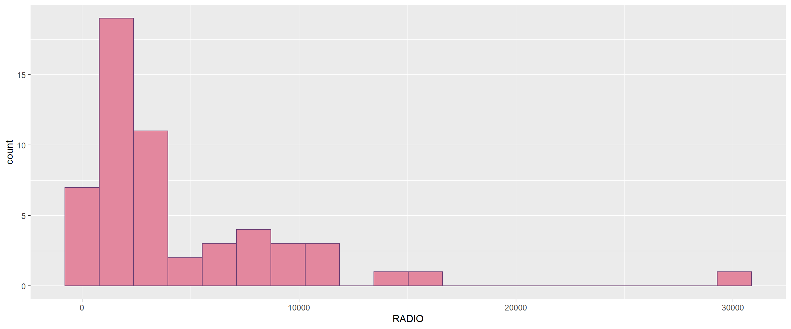
ggplot(data=ict_derived,
aes(x=`RADIO`)) +
geom_boxplot(color="#704276",
fill="#e3879e")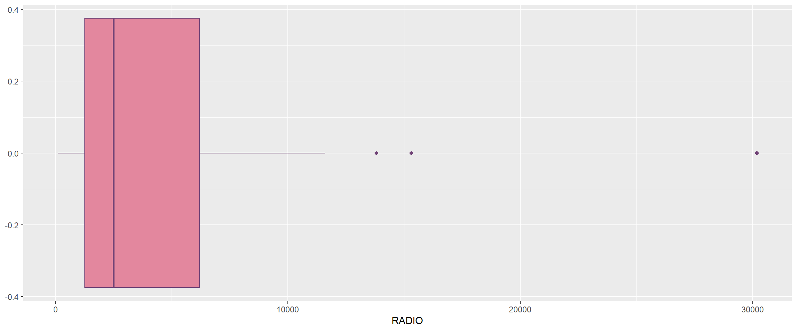
'RADIO_PR' Distributionggplot(data=ict_derived,
aes(x=`RADIO_PR`)) +
geom_histogram(bins=20,
color="black",
fill="#e3879e")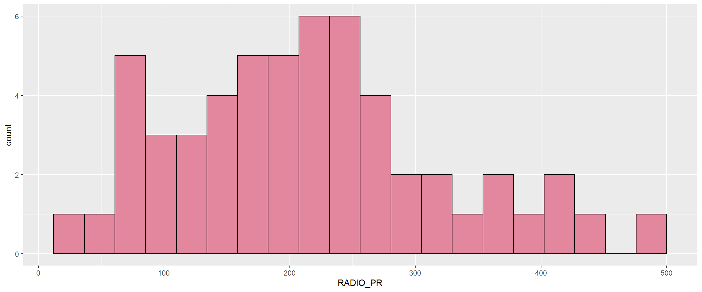
ggplot(data=ict_derived,
aes(x=`RADIO_PR`)) +
geom_boxplot(color="black",
fill="#e3879e")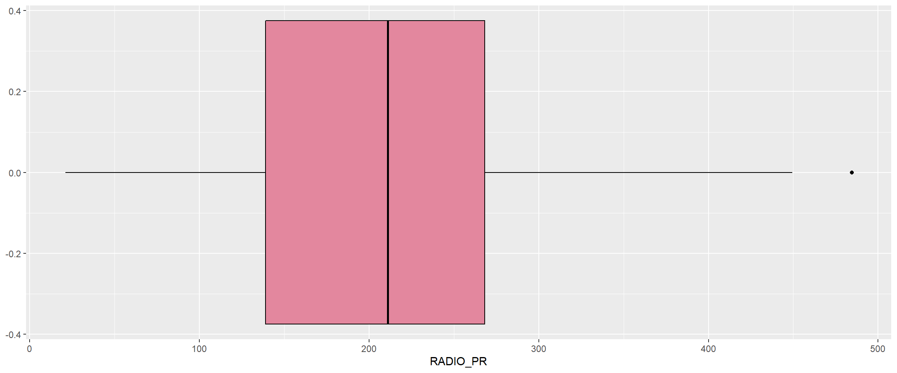
radio <- ggplot(data=ict_derived,
aes(x= `RADIO`)) +
geom_histogram(bins=20,
color="black",
fill="#e3879e")
tv <- ggplot(data=ict_derived,
aes(x= `TV`)) +
geom_histogram(bins=20,
color="black",
fill="#e3879e")
llphone <- ggplot(data=ict_derived,
aes(x= `LLPHONE`)) +
geom_histogram(bins=20,
color="black",
fill="#e3879e")
mphone <- ggplot(data=ict_derived,
aes(x= `MPHONE`)) +
geom_histogram(bins=20,
color="black",
fill="#e3879e")
computer <- ggplot(data=ict_derived,
aes(x= `COMPUTER`)) +
geom_histogram(bins=20,
color="black",
fill="#e3879e")
internet <- ggplot(data=ict_derived,
aes(x= `INTERNET`)) +
geom_histogram(bins=20,
color="black",
fill="#e3879e")
ggarrange(radio, tv, llphone, mphone, computer, internet,
ncol = 3,
nrow = 2)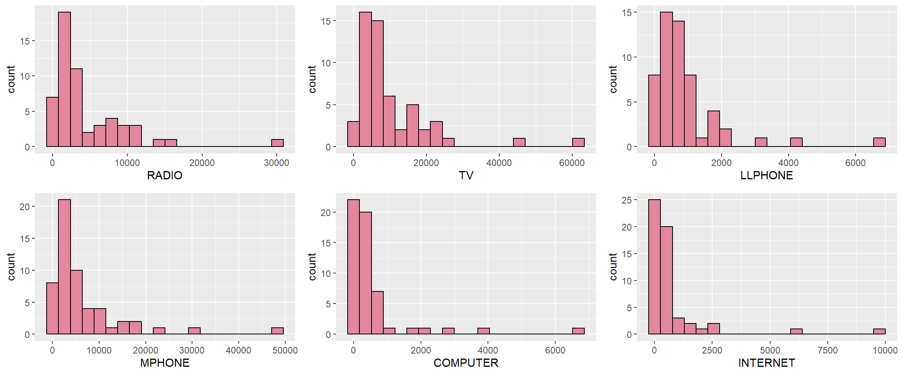
radio <- ggplot(data=ict_derived,
aes(x= `RADIO_PR`)) +
geom_histogram(bins=20,
color="black",
fill="#e3879e")
tv <- ggplot(data=ict_derived,
aes(x= `TV_PR`)) +
geom_histogram(bins=20,
color="black",
fill="#e3879e")
llphone <- ggplot(data=ict_derived,
aes(x= `LLPHONE_PR`)) +
geom_histogram(bins=20,
color="black",
fill="#e3879e")
mphone <- ggplot(data=ict_derived,
aes(x= `MPHONE_PR`)) +
geom_histogram(bins=20,
color="black",
fill="#e3879e")
computer <- ggplot(data=ict_derived,
aes(x= `COMPUTER_PR`)) +
geom_histogram(bins=20,
color="black",
fill="#e3879e")
internet <- ggplot(data=ict_derived,
aes(x= `INTERNET_PR`)) +
geom_histogram(bins=20,
color="black",
fill="#e3879e")
ggarrange(radio, tv, llphone, mphone, computer, internet,
ncol = 3,
nrow = 2)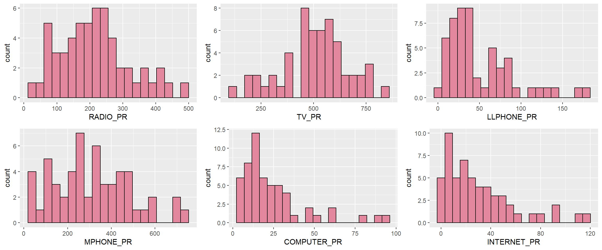
Before being able to make a chloropleth map of the different variables across the different townships, we need to join our aspatial data to the geospatial data. The code chunk below using left_join() to join ‘shan_sf’ and ‘ict_derived’ into one simple feature dataframe. The column 'TS_PCODE' is used as the unique identifier to join the objects.
shan_sf <- left_join(shan_sf,
ict_derived,
by=c("TS_PCODE"="TS_PCODE"))
write_rds(shan_sf, "data/rds/shan_sf.rds")We also right the resulting dataframe into an RDS file using write_rds() .
The code chunk below uses qtm() function to quickly prepare the chloropleth map of 'RADIO_PR'.
qtm(shan_sf, "RADIO_PR",
fill.palette = "RdPu")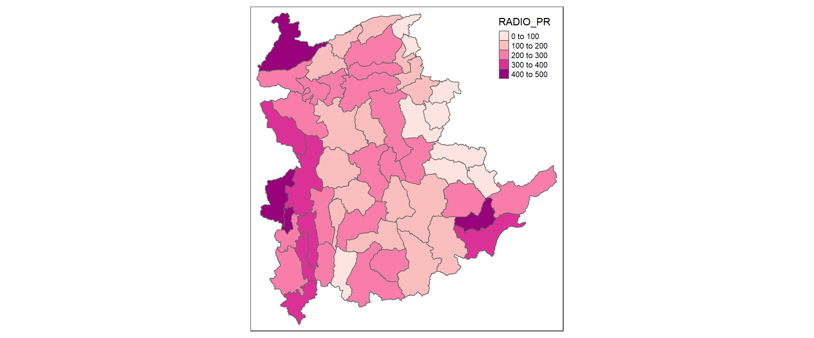
The code chunk below shows both the chloropleth map of 'TT_HOUSEHOLDS' and 'RADIO' to show the relationship between number of households and number of households with radios.
TT_HOUSEHOLDS.map <- tm_shape(shan_sf) +
tm_fill(col = "TT_HOUSEHOLDS",
n = 5,
style = "jenks",
title = "Total households",
palette = "RdPu") +
tm_borders(alpha = 0.5)
RADIO.map <- tm_shape(shan_sf) +
tm_fill(col = "RADIO",
n = 5,
style = "jenks",
title = "Number Radio ",
palette = "RdPu") +
tm_borders(alpha = 0.5)
tmap_arrange(TT_HOUSEHOLDS.map, RADIO.map,
asp=NA, ncol=2)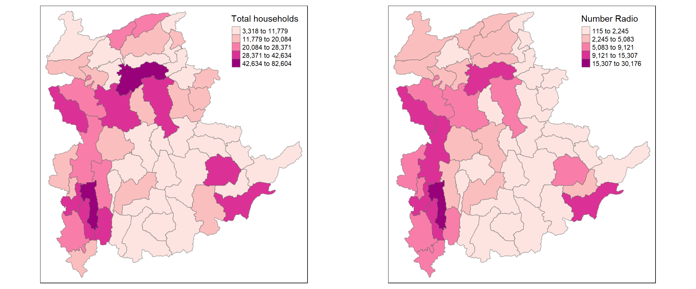
TT_HOUSEHOLDS.map <- tm_shape(shan_sf) +
tm_fill(col = "TT_HOUSEHOLDS",
n = 5,
style = "jenks",
title = "Total households",
palette = "RdPu") +
tm_borders(alpha = 0.5)
RADIO_PR.map <- tm_shape(shan_sf) +
tm_fill(col = "RADIO_PR",
n = 5,
style = "jenks",
title = "Radio PR",
palette = "RdPu") +
tm_borders(alpha = 0.5)
tmap_arrange(TT_HOUSEHOLDS.map, RADIO_PR.map,
asp=NA, ncol=2)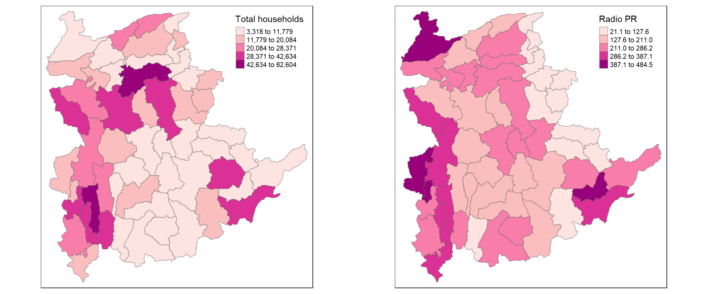
tmap_arrange(RADIO.map, RADIO_PR.map,
asp=NA, ncol=2)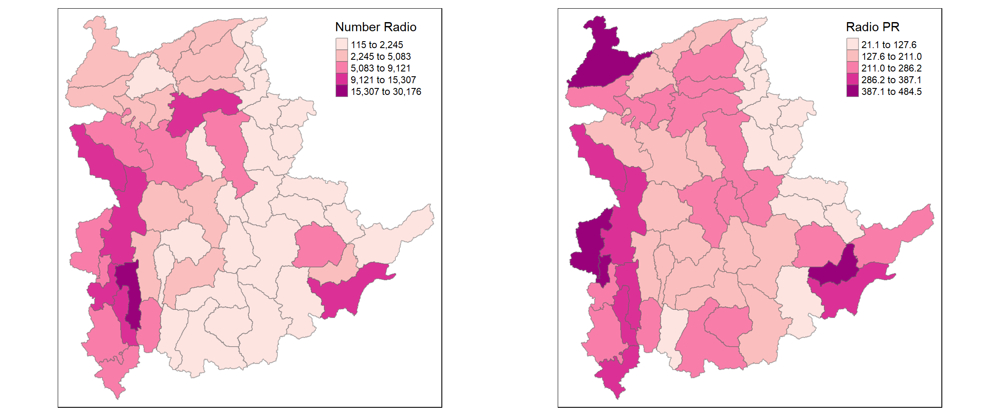
Before we perform cluster analysis, it is important for us to ensure that the cluster variables are not highly correlated.
The cor() function is used to measure the correlation coefficient between all our variables from ‘ict_derived’.
cluster_vars.cor = cor(ict_derived[,12:17])The code chunk below uses the corrplot.mixed() function to visualize and analyze the correlation of the input variables. It’s a special function used for mixed visualization style, where we can set the visual methods for the lower and upper triangle separately.
corrplot.mixed(cluster_vars.cor,
lower = "ellipse",
upper = "number",
tl.pos = "lt",
diag = "l",
tl.col = "#cb6a82")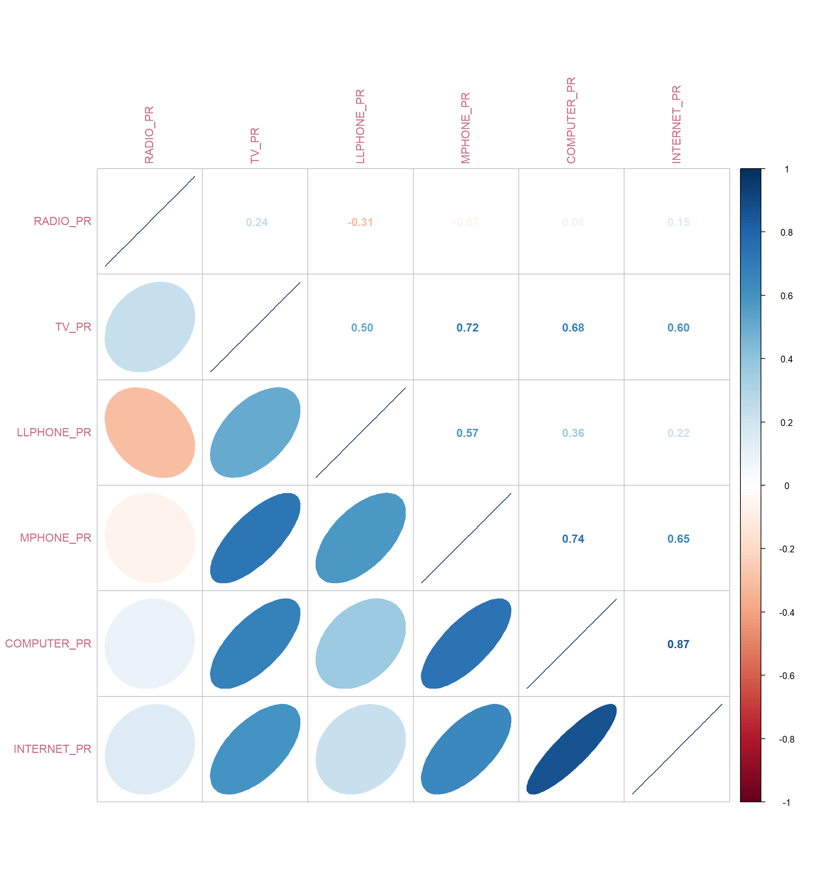
The correlation plot above shows that 'COMPUTER_PR' and 'INTERNET_PR' are highly correlated. (This makes sense, since if you think about it, when you get a computer, you also install internet connection.) This suggest that only one of them should be used in the cluster analysis instead of both.
The code chunk below, uses st_set_geometry() to extract the data.frame from the simple features object by setting it to ’NULL’. Using select() we get only the variables needed including the township name.
cluster_vars <- shan_sf %>%
st_set_geometry(NULL) %>%
select("TS.x", "RADIO_PR", "TV_PR", "LLPHONE_PR", "MPHONE_PR", "COMPUTER_PR")
head(cluster_vars,10) TS.x RADIO_PR TV_PR LLPHONE_PR MPHONE_PR COMPUTER_PR
1 Mongmit 286.1852 554.1313 35.30618 260.6944 12.15939
2 Pindaya 417.4647 505.1300 19.83584 162.3917 12.88190
3 Ywangan 484.5215 260.5734 11.93591 120.2856 4.41465
4 Pinlaung 231.6499 541.7189 28.54454 249.4903 13.76255
5 Mabein 449.4903 708.6423 72.75255 392.6089 16.45042
6 Kalaw 280.7624 611.6204 42.06478 408.7951 29.63160
7 Pekon 318.6118 535.8494 39.83270 214.8476 18.97032
8 Lawksawk 387.1017 630.0035 31.51366 320.5686 21.76677
9 Nawnghkio 349.3359 547.9456 38.44960 323.0201 15.76465
10 Kyaukme 210.9548 601.1773 39.58267 372.4930 30.94709Because of the correlation analysis done earlier, we did not include 'INTERNET_PR' in our clustering variables.
The code chunk below changes the row ID to township names.
row.names(cluster_vars) <- cluster_vars$"TS.x"
head(cluster_vars,10) TS.x RADIO_PR TV_PR LLPHONE_PR MPHONE_PR COMPUTER_PR
Mongmit Mongmit 286.1852 554.1313 35.30618 260.6944 12.15939
Pindaya Pindaya 417.4647 505.1300 19.83584 162.3917 12.88190
Ywangan Ywangan 484.5215 260.5734 11.93591 120.2856 4.41465
Pinlaung Pinlaung 231.6499 541.7189 28.54454 249.4903 13.76255
Mabein Mabein 449.4903 708.6423 72.75255 392.6089 16.45042
Kalaw Kalaw 280.7624 611.6204 42.06478 408.7951 29.63160
Pekon Pekon 318.6118 535.8494 39.83270 214.8476 18.97032
Lawksawk Lawksawk 387.1017 630.0035 31.51366 320.5686 21.76677
Nawnghkio Nawnghkio 349.3359 547.9456 38.44960 323.0201 15.76465
Kyaukme Kyaukme 210.9548 601.1773 39.58267 372.4930 30.94709Instead of row numbers, we now have the township name as the unique identifier of each row. Now we can remove the column 'TS.' using the code chunk below.
shan_ict <- select(cluster_vars, c(2:6))
head(shan_ict, 10) RADIO_PR TV_PR LLPHONE_PR MPHONE_PR COMPUTER_PR
Mongmit 286.1852 554.1313 35.30618 260.6944 12.15939
Pindaya 417.4647 505.1300 19.83584 162.3917 12.88190
Ywangan 484.5215 260.5734 11.93591 120.2856 4.41465
Pinlaung 231.6499 541.7189 28.54454 249.4903 13.76255
Mabein 449.4903 708.6423 72.75255 392.6089 16.45042
Kalaw 280.7624 611.6204 42.06478 408.7951 29.63160
Pekon 318.6118 535.8494 39.83270 214.8476 18.97032
Lawksawk 387.1017 630.0035 31.51366 320.5686 21.76677
Nawnghkio 349.3359 547.9456 38.44960 323.0201 15.76465
Kyaukme 210.9548 601.1773 39.58267 372.4930 30.94709In general, multiple variables will be used in cluster analysis. It is not unusual that the range of values we work with per variable will be different. For example, comparing percentages and counts. In order to avoid a cluster analysis result that is biased to clustering variables with large values, it is useful to standardise the input variables before performing cluster analysis.
shan_ict.std <- normalize(shan_ict)
summary(shan_ict.std) RADIO_PR TV_PR LLPHONE_PR MPHONE_PR
Min. :0.0000 Min. :0.0000 Min. :0.0000 Min. :0.0000
1st Qu.:0.2544 1st Qu.:0.4600 1st Qu.:0.1123 1st Qu.:0.2199
Median :0.4097 Median :0.5523 Median :0.1948 Median :0.3846
Mean :0.4199 Mean :0.5416 Mean :0.2703 Mean :0.3972
3rd Qu.:0.5330 3rd Qu.:0.6750 3rd Qu.:0.3746 3rd Qu.:0.5608
Max. :1.0000 Max. :1.0000 Max. :1.0000 Max. :1.0000
COMPUTER_PR
Min. :0.00000
1st Qu.:0.09598
Median :0.17607
Mean :0.23692
3rd Qu.:0.29868
Max. :1.00000 According to the summary, the range of values for all PRs is between 0-1.
The code chunk below uses the scale() function to perform z-score standardization on the our clustering variables.
shan_ict.z <- scale(shan_ict)
describe(shan_ict.z) vars n mean sd median trimmed mad min max range skew kurtosis
RADIO_PR 1 55 0 1 -0.04 -0.06 0.94 -1.85 2.55 4.40 0.48 -0.27
TV_PR 2 55 0 1 0.05 0.04 0.78 -2.47 2.09 4.56 -0.38 -0.23
LLPHONE_PR 3 55 0 1 -0.33 -0.15 0.68 -1.19 3.20 4.39 1.37 1.49
MPHONE_PR 4 55 0 1 -0.05 -0.06 1.01 -1.58 2.40 3.98 0.48 -0.34
COMPUTER_PR 5 55 0 1 -0.26 -0.18 0.64 -1.03 3.31 4.34 1.80 2.96
se
RADIO_PR 0.13
TV_PR 0.13
LLPHONE_PR 0.13
MPHONE_PR 0.13
COMPUTER_PR 0.13r <- ggplot(data=ict_derived,
aes(x= `RADIO_PR`)) +
geom_histogram(bins=20,
color="black",
fill="#e3879e") +
ggtitle("Raw values")
shan_ict_s_df <- as.data.frame(shan_ict.std)
s <- ggplot(data=shan_ict_s_df,
aes(x=`RADIO_PR`)) +
geom_histogram(bins=20,
color="black",
fill="#e3879e") +
ggtitle("Min-Max")
shan_ict_z_df <- as.data.frame(shan_ict.z)
z <- ggplot(data=shan_ict_z_df,
aes(x=`RADIO_PR`)) +
geom_histogram(bins=20,
color="black",
fill="#e3879e") +
ggtitle("Z-score")
ggarrange(r, s, z,
ncol = 3,
nrow = 1)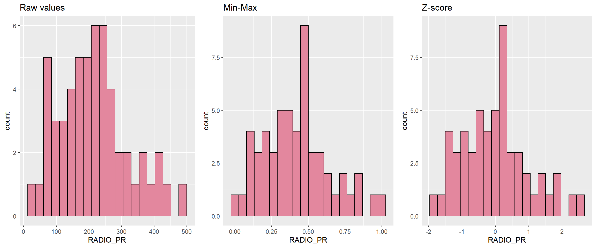
r <- ggplot(data=ict_derived,
aes(x= `RADIO_PR`)) +
geom_density(color="black",
fill="#e3879e") +
ggtitle("Raw values")
shan_ict_s_df <- as.data.frame(shan_ict.std)
s <- ggplot(data=shan_ict_s_df,
aes(x=`RADIO_PR`)) +
geom_density(color="black",
fill="#e3879e") +
ggtitle("Min-Max")
shan_ict_z_df <- as.data.frame(shan_ict.z)
z <- ggplot(data=shan_ict_z_df,
aes(x=`RADIO_PR`)) +
geom_density(color="black",
fill="#e3879e") +
ggtitle("Z-score Standardization")
ggarrange(r, s, z,
ncol = 3,
nrow = 1)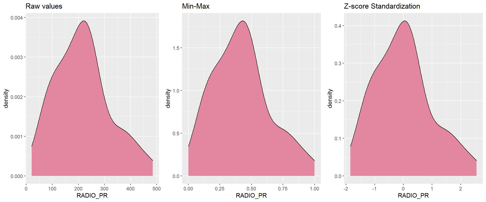
The code chunk below uses dist() to create a proximity matrix using the ’euclidean’ method. The function dist() also supports maximum, manhattan, canberra, binary and minkowski methods.
proxmat <- dist(shan_ict, method = 'euclidean')The first 18 rows and 6 columns of the proximity matrix are shown in the image below.

The code chunk below uses the function hclust() to create clusters using the agglomeration method. The 'method' was set to ‘ward.D’, but the function support seven other algorithms namely: ward.D2, single, complete, average(UPGMA), mcquitty (WPGMA), median (WPGMC) and centroid (UPGMC).
hclust_ward <- hclust(proxmat, method = 'ward.D')We can then plot the tree using plot() as shown in the code chunk below:
plot(hclust_ward, cex = 0.7, col = "#cb6a82")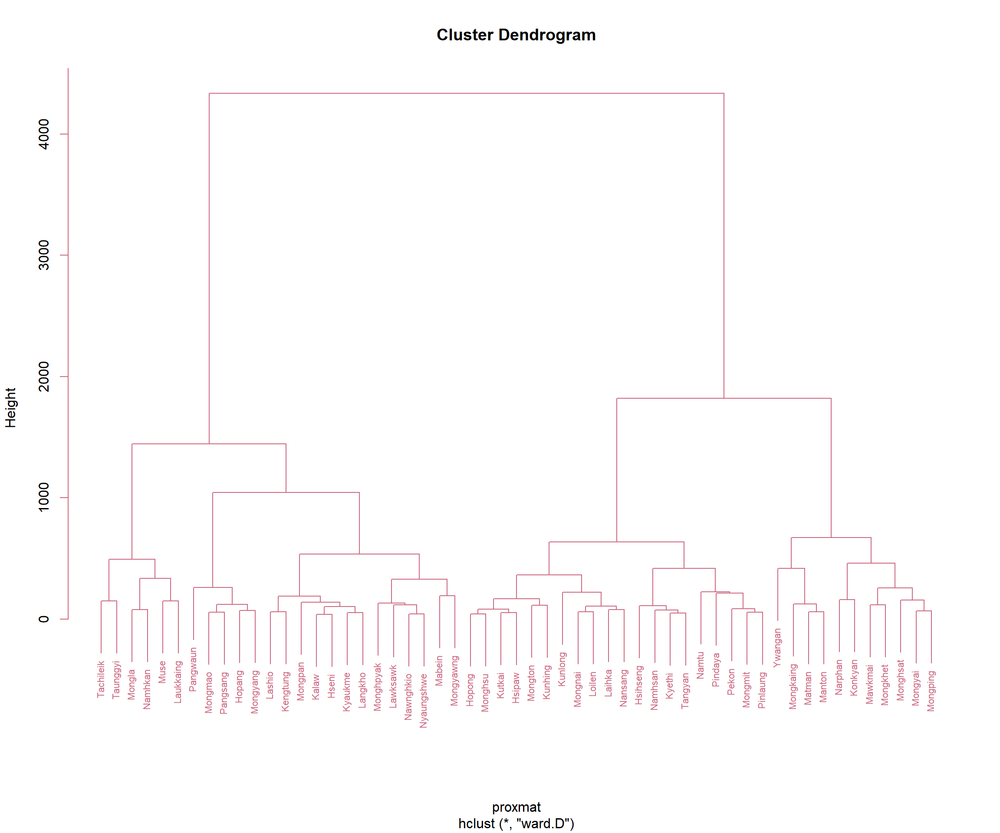
One of the challenge in performing hierarchical clustering is to identify stronger clustering structures. The issue can be solved by using the agnes() function. It functions like hclust(), however, with agnes() you can also get the agglomerative coefficient, which measures the amount of clustering structure found and values closer to 1 suggest strong clustering structure.
The code chunk below will be used to compute the agglomerative coefficients of hierarchical clustering algorithms, namely ‘average’, ‘single’, ‘complete’ and ‘ward’.
m <- c( "average", "single", "complete", "ward")
names(m) <- c( "average", "single", "complete", "ward")
ac <- function(x) {
agnes(shan_ict, method = x)$ac
}
map_dbl(m, ac) average single complete ward
0.8131144 0.6628705 0.8950702 0.9427730 With reference to the output above, we can see that Ward's method provides the strongest clustering structure among the four methods assessed. Hence, in the subsequent analysis, only Ward's method will be used.
Another technical challenge faced by data analysts in performing clustering analysis is to determine the optimal clusters to retain.
There are three commonly used methods to determine the optimal clusters, they are:
The gap statistic compares the total within intra-cluster variation for different values of k with their expected values under null reference distribution of the data. The estimate of the optimal clusters will be value that maximize the gap statistic (i.e., that yields the largest gap statistic). This means that the clustering structure is far away from the random uniform distribution of points.
To compute the gap statistic, clusGap() of cluster package will be used.
set.seed(12345)
gap_stat <- clusGap(shan_ict,
FUN = hcut,
nstart = 25,
K.max = 10,
B = 50)
print(gap_stat, method = "firstmax")Clustering Gap statistic ["clusGap"] from call:
clusGap(x = shan_ict, FUNcluster = hcut, K.max = 10, B = 50, nstart = 25)
B=50 simulated reference sets, k = 1..10; spaceH0="scaledPCA"
--> Number of clusters (method 'firstmax'): 1
logW E.logW gap SE.sim
[1,] 8.407129 8.680794 0.2736651 0.04460994
[2,] 8.130029 8.350712 0.2206824 0.03880130
[3,] 7.992265 8.202550 0.2102844 0.03362652
[4,] 7.862224 8.080655 0.2184311 0.03784781
[5,] 7.756461 7.978022 0.2215615 0.03897071
[6,] 7.665594 7.887777 0.2221833 0.03973087
[7,] 7.590919 7.806333 0.2154145 0.04054939
[8,] 7.526680 7.731619 0.2049390 0.04198644
[9,] 7.458024 7.660795 0.2027705 0.04421874
[10,] 7.377412 7.593858 0.2164465 0.04540947fviz_gap_stat(gap_stat, linecolor = "#cb6a82")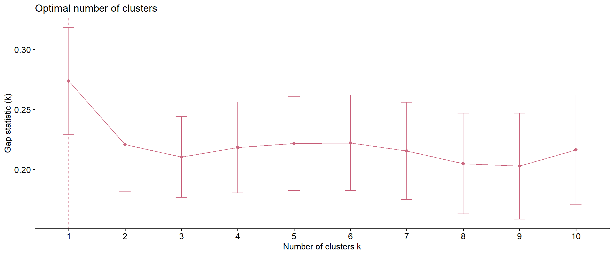
With reference to the gap statistic graph above, the recommended number of clusters to retain is 1. However, it is not logical to retain only one cluster. By examining the gap statistic graph, the 6-cluster gives the largest gap statistic and should be the next best cluster to pick.
In the dendrogram displayed above, each leaf corresponds to one observation. As we move up the tree, observations that are similar to each other are combined into branches, which are themselves fused at a higher height.
The height of the fusion, provided on the vertical axis, indicates the (dis)similarity between two observations. The higher the height of the fusion, the less similar the observations are. Note that, conclusions about the proximity of two observations can be drawn only based on the height where branches containing those two observations first are fused. We cannot use the proximity of two observations along the horizontal axis as a criteria of their similarity.
It's also possible to draw the dendrogram with a border around the selected clusters by using rect.hclust() of R stats. The argument border is used to specify the border colors for the rectangles.
plot(hclust_ward, cex = 0.6, col = "#cb6a82")
rect.hclust(hclust_ward,
k = 6,
border = 2:5)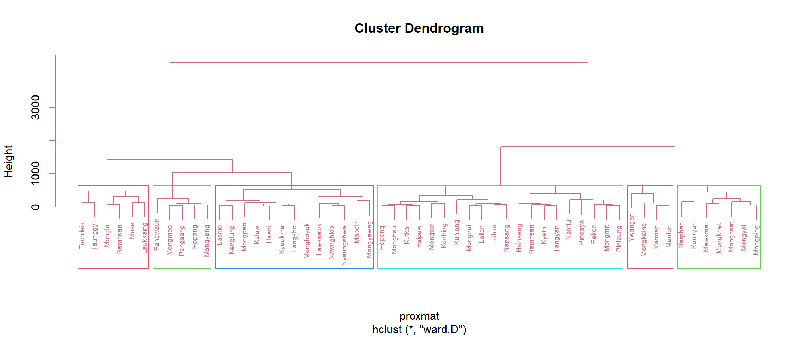
The data was loaded into a data frame, but it has to be a data matrix to make a heatmap.
The code chunk below will be used to transform ‘shan_ict’ data frame into a data matrix.
shan_ict_mat <- data.matrix(shan_ict)heatmaply()In the code chunk below, we use heatmaply() to build an interactive cluster heatmap. By default, normalize() centers and scales the matrix values.
heatmaply(normalize(shan_ict_mat),
Colv=NA,
dist_method = "euclidean",
hclust_method = "ward.D",
seriate = "OLO",
colors = RdPu,
k_row = 6,
margins = c(NA,200,60,NA),
fontsize_row = 4,
fontsize_col = 5,
main="Geographic Segmentation of Shan State by ICT indicators",
xlab = "ICT Indicators",
ylab = "Townships of Shan State"
)By hovering over the blocks, we can see the values of the variables to have a more specific and quantifiable idea of the cluster definitions.
With closed examination of the dendragram above, we have decided to retain six clusters.
The function cutree() will be used in the code chunk below to derive a 6-cluster model. It takes the resulting tree from hclust() and splits it to several groups by specifying the desired number of groups ('k' argument) or the cut heights.
groups <- as.factor(cutree(hclust_ward, k=6))In order to visualize the clusters, the ‘groups’ object needs to be appended onto the’shan_sf’ simple feature object.
shan_sf_cluster <- cbind(shan_sf, as.matrix(groups)) %>%
rename(`CLUSTER`=`as.matrix.groups.`)The code chunk below uses qtm() to plot the chloropleth map colored based on cluster groupings.
qtm(shan_sf_cluster, "CLUSTER", fill.palette = "Pastel1")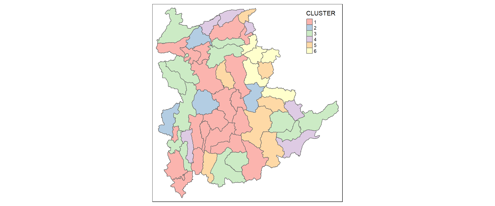
The choropleth map above reveals the clusters are very fragmented. The is one of the major limitation when non-spatial clustering algorithm such as hierarchical cluster analysis method is used.
SKATER stands for “Spatial Kluster Analysis by Tree Edge Removal” and it is a regionalization method for clustering based on the location by spatial autocorrelation and spatial patterns. It constructs the minimum spanning tree from the adjacency matrix and cuts the tree to achieve maximum internal homogeneity.
The skater() function only supports sp objects like SpatialPolygonDataFrame. This is because the sf package was created later than the when the skater() function was made, so there is no support yet for simple features objects.
The code chunk uses as_Spatial() function converts ‘shan_sf’ to a SpatialPolygonDataFrame called ’shan_sp’.
shan_sp <- as_Spatial(shan_sf)Since we’ve established that the SKATER method takes into account spatial patterns, we need to figure out the different neighbors of each feature.
shan.nb <- poly2nb(shan_sp)
summary(shan.nb)Neighbour list object:
Number of regions: 55
Number of nonzero links: 264
Percentage nonzero weights: 8.727273
Average number of links: 4.8
Link number distribution:
2 3 4 5 6 7 8 9
5 9 7 21 4 3 5 1
5 least connected regions:
3 5 7 9 47 with 2 links
1 most connected region:
8 with 9 linksThe code chunk below produces a plot that shows the links made between the neighboring townships.
plot(shan_sp,
border=grey(.5))
plot(shan.nb,
coordinates(shan_sp),
col="#cb6a82",
add=TRUE)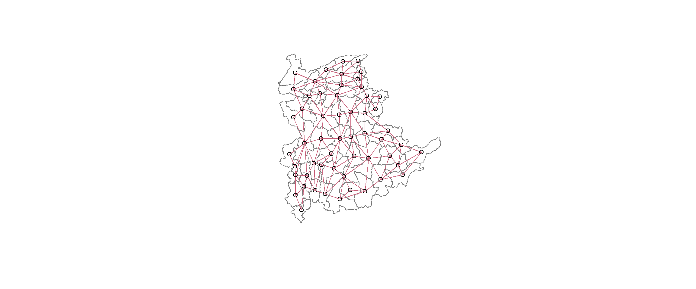
The code chunk below uses nbcosts() to compute the cost of each edge given the neighbors list and clustering variables.
lcosts <- nbcosts(shan.nb, shan_ict)For each observation, this gives the pairwise dissimilarity between its values on the five variables and the values for the neighbouring observation (from the neighbor list). Basically, this is the notion of a generalised weight for a spatial weights matrix.
Next, We will incorporate these costs into a weights object in the same way as we did in the calculation of inverse of distance weights. In other words, we will convert the neighbor list to a list weights object by specifying the just computed 'lcosts' as the weights.
shan.w <- nb2listw(shan.nb,
lcosts,
style="B")
summary(shan.w)Characteristics of weights list object:
Neighbour list object:
Number of regions: 55
Number of nonzero links: 264
Percentage nonzero weights: 8.727273
Average number of links: 4.8
Link number distribution:
2 3 4 5 6 7 8 9
5 9 7 21 4 3 5 1
5 least connected regions:
3 5 7 9 47 with 2 links
1 most connected region:
8 with 9 links
Weights style: B
Weights constants summary:
n nn S0 S1 S2
B 55 3025 76267.65 58260785 522016004The code chunk below uses the function mstree() to compute for the minimum spanning tree.
shan.mst <- mstree(shan.w)
class(shan.mst)[1] "mst" "matrix"The class() function tells us the class of the object. This tells us ‘shan.mst’ is an mst object that inherits from a matrix object.
dim(shan.mst)[1] 54 3The dimension is 54 and not 55 (which is the number of townships) because the minimum spanning tree consists of n-1 edges (links) in order to traverse all nods.
head(shan.mst) [,1] [,2] [,3]
[1,] 31 25 229.44658
[2,] 25 10 163.95741
[3,] 10 1 144.02475
[4,] 10 9 157.04230
[5,] 9 8 90.82891
[6,] 8 6 140.01101The plot method for the MST include a way to show the observation numbers of the nodes in addition to the edge. As before, we plot this together with the township boundaries. We can see how the initial neighbour list is simplified to just one edge connecting each of the nodes, while passing through all the nodes.
plot(shan_sp, border=gray(.5))
plot.mst(shan.mst,
coordinates(shan_sp),
col="#cb6a82",
cex.lab=0.7,
cex.circles=0.005,
add=TRUE)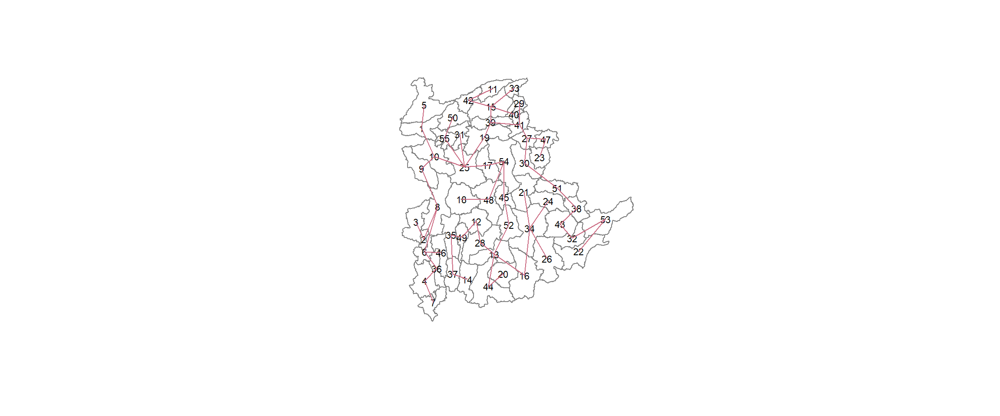
The code chunk below computes spatially constrained clusters using skater() function.
clust6 <- skater(edges = shan.mst[,1:2],
data = shan_ict,
method = "euclidean",
ncuts = 5)The skater() takes three mandatory arguments: - the first two columns of the MST matrix (i.e. not the cost), - the data matrix (to update the costs as units are being grouped), and - the number of cuts (which is one less than the number of clusters).
str(clust6)List of 8
$ groups : num [1:55] 3 3 6 3 3 3 3 3 3 3 ...
$ edges.groups:List of 6
..$ :List of 3
.. ..$ node: num [1:22] 13 48 54 55 45 37 34 16 25 31 ...
.. ..$ edge: num [1:21, 1:3] 48 55 54 37 34 16 45 31 13 13 ...
.. ..$ ssw : num 3423
..$ :List of 3
.. ..$ node: num [1:18] 47 27 53 38 42 15 41 51 43 32 ...
.. ..$ edge: num [1:17, 1:3] 53 15 42 38 41 51 15 27 15 43 ...
.. ..$ ssw : num 3759
..$ :List of 3
.. ..$ node: num [1:11] 2 6 8 1 36 4 10 9 46 5 ...
.. ..$ edge: num [1:10, 1:3] 6 1 8 36 4 6 8 10 10 9 ...
.. ..$ ssw : num 1458
..$ :List of 3
.. ..$ node: num [1:2] 44 20
.. ..$ edge: num [1, 1:3] 44 20 95
.. ..$ ssw : num 95
..$ :List of 3
.. ..$ node: num 23
.. ..$ edge: num[0 , 1:3]
.. ..$ ssw : num 0
..$ :List of 3
.. ..$ node: num 3
.. ..$ edge: num[0 , 1:3]
.. ..$ ssw : num 0
$ not.prune : NULL
$ candidates : int [1:6] 1 2 3 4 5 6
$ ssto : num 12613
$ ssw : num [1:6] 12613 10977 9962 9540 9123 ...
$ crit : num [1:2] 1 Inf
$ vec.crit : num [1:55] 1 1 1 1 1 1 1 1 1 1 ...
- attr(*, "class")= chr "skater"We can check the cluster assignment by using the code chunk below.
ccs6 <- clust6$groups
ccs6 [1] 3 3 6 3 3 3 3 3 3 3 2 1 1 1 2 1 1 1 2 4 1 2 5 1 1 1 2 1 2 2 1 2 2 1 1 3 1 2
[39] 2 2 2 2 2 4 1 3 2 1 1 1 2 1 2 1 1We can find out how many observations are in each cluster by means of the table() command.
table(ccs6)ccs6
1 2 3 4 5 6
22 18 11 2 1 1 Lastly, we can also plot the pruned tree that shows the five clusters on top of the township area.
plot(shan_sp, border=gray(.5))
plot(clust6,
coordinates(shan_sp),
cex.lab=.7,
groups.colors=c("#e3879e","#af7cb6","#a7c7e7", "#C1E1C1", "red"),
cex.circles=0.005,
add=TRUE)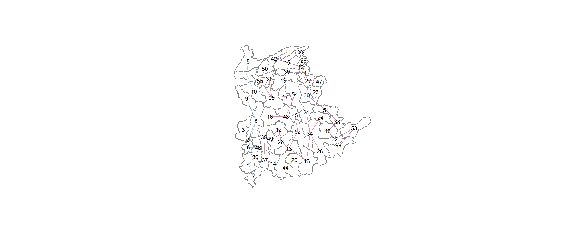
groups_mat <- as.matrix(clust6$groups)
shan_sf_spatialcluster <- cbind(shan_sf_cluster, as.factor(groups_mat)) %>%
rename(`SP_CLUSTER`=`as.factor.groups_mat.`)
qtm(shan_sf_spatialcluster, "SP_CLUSTER", fill.palette = "Pastel1")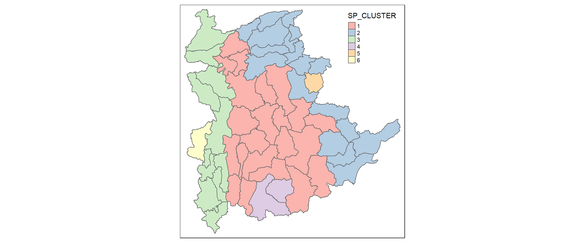
For easy comparison, it will be better to place both the hierarchical clustering and spatially constrained hierarchical clustering maps next to each other.
hclust.map <- qtm(shan_sf_cluster,
"CLUSTER",
fill.palette = "Pastel1") +
tm_borders(alpha = 0.5)
shclust.map <- qtm(shan_sf_spatialcluster,
"SP_CLUSTER",
fill.palette = "Pastel1") +
tm_borders(alpha = 0.5)
tmap_arrange(hclust.map,
shclust.map,
asp=NA,
ncol=2)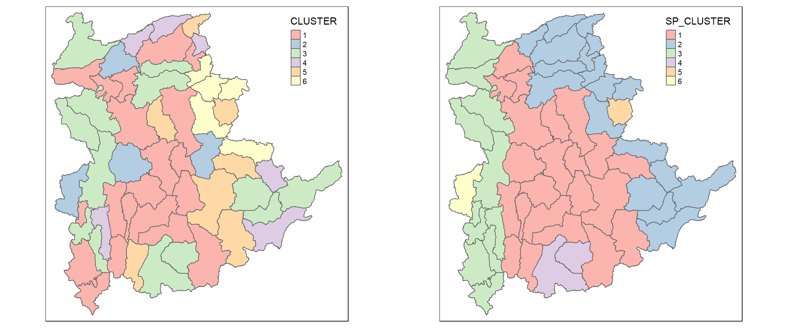
The ‘SP_CLUSTER’ chloropleth map is a lot more pleasing to the eyes, no?